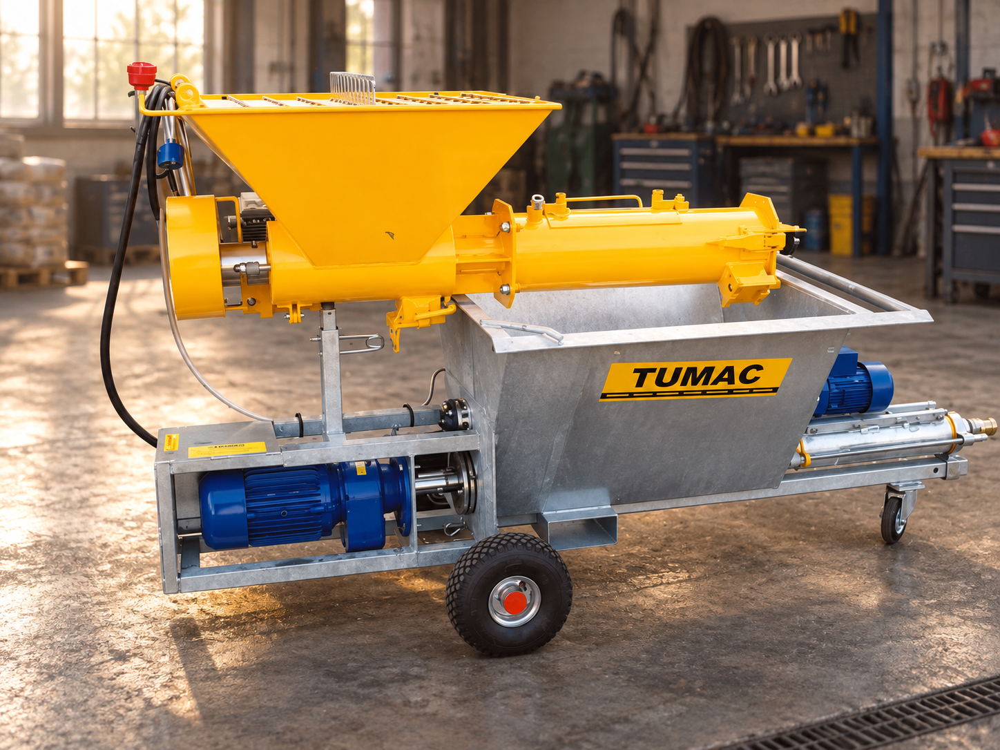

Byggt för jobbet.
Gjort för att hålla.
Pumpar, blandare och lyftutrustning. Vi hjälper dig att hitta rätt utrustning för nästa projekt.

Rätt maskin.
Rätt förutsättningar.
Utforska vårt sortiment av pumpar,
blandare och lyftutrustning.
Ingen maskin hittades.
Prova ett annat sökord eller visa hela sortimentet.
Behöver du hjälp att välja? Vi hjälper dig gärna.
Vi hjälper dig vidare.
Reservdelar, produktval eller en fråga om din maskin. Prata med oss på Tumac.
08-580 278 00